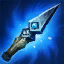
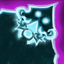

| Items Iniciales | Items Básicos | Items Respaldo |
|---|---|---|
|  | ||
|  |
Pro Tip
Un consejo para el uso de Bardo es aprender a saber usar la habilidad de Amarre Cósmico (Q), ya que saber usarlo decide la delgada linea entre la vida o la muerte lo que implica que el aplicarlo bien te puede salvar la vida o ganar kills seguras para tus aliados.De igual forma saber lanzar el ulti SÓLO para los enemigos tambien es de mucha ayuda, ya que ayuda a tus aliados a preparar la pelea para aplicar sus habilidades con mas precisión